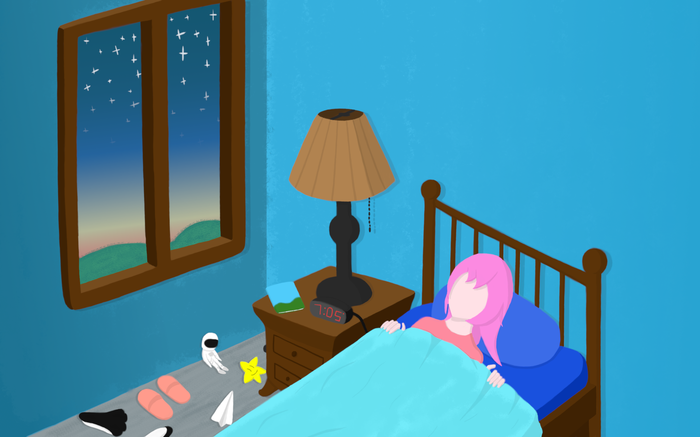

Starward Reach
Help a young girl reach for the stars in this 2D hand-drawn platformer roguelike!
1
3 Months
Unity
My Role: Solo Developer
- Programs Used:
- Visual Studio
- GIMP
- Trello
- Audacity
Reach for the stars! In Starward Reach, you play as a young girl climbing the sky to reach the stars. As you ascend, you'll gather new movement abilities that will help you climb. But beware! If you're shocked by the growing storm clouds or the accelerating rising storm, you'll be sent back too earth. Keep climbing and try to get as high a score as you can!
This game was made during the Fall 2024 Semester for my Intro to Game Development class at Bradley. Since I already had experience with Unity going into this class, I decided to challenge myself for this project by making all the art by hand and figuring out how to make procedurally generated levels.
My Contributions:
- Developed the game's core design and code.
- Programmed full procedural generation of levels.
- Drew and animated hand-drawn art assets.
- Managed tasks and project milestones.